01
Veille · IA Coach
IA Coach
Suggestion de spots, de matériel, de conseils en général.
spotsmatérielconseilspersonnalisation
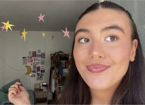
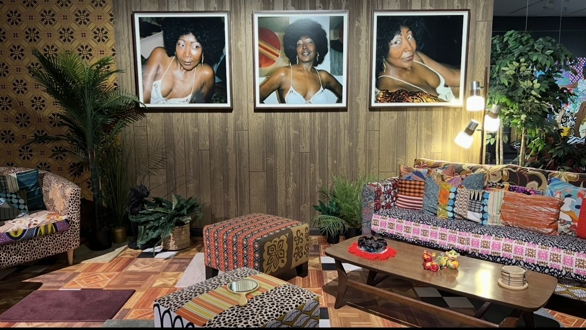
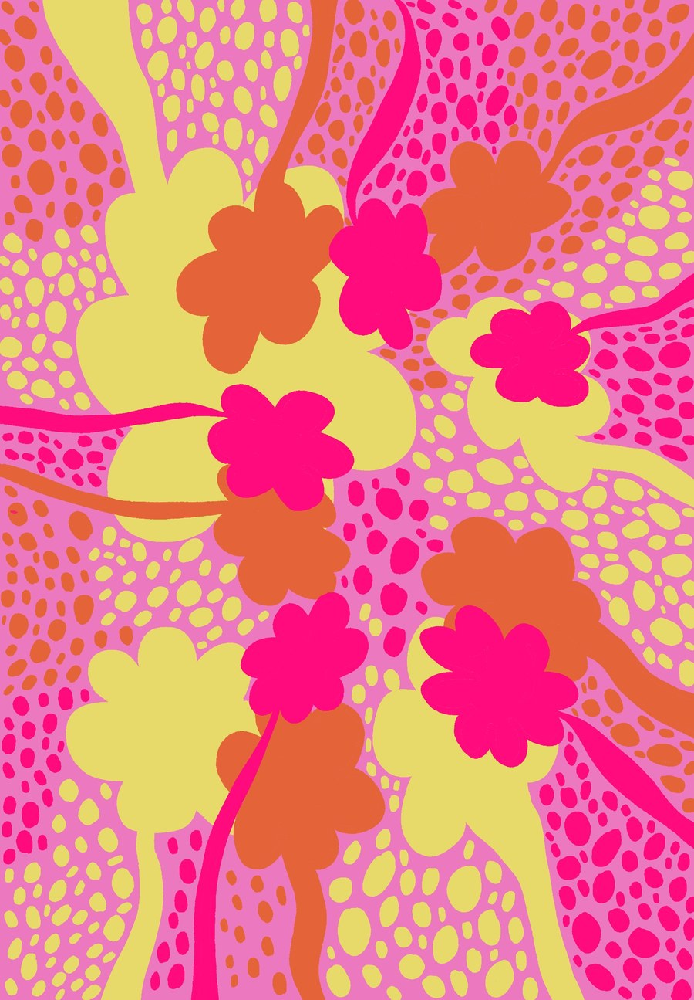
Étudiante en UX-UI design à l’École de design Nantes Atlantique, je développe ma créativité autour de problématiques concrètes qui touchent directement les utilisateurs. Je rentre en Master 1 spécialisé en Food, un univers qui me passionne.
À propos de moi ↗L’actualité n’a jamais été aussi accessible, et pourtant elle épuise. Entre le flux continu de notifications et la répétition des mauvaises nouvelles, beaucoup de jeunes finissent par se désabonner, couper les alertes, voire s’éloigner complètement de l’information : selon l’IPSOS (2022), 36 % des personnes qui ne s’y intéressent pas invoquent une actualité trop négative et des informations trop angoissantes. Et pendant que certains décrochent, 69 % des 15-24 ans s’informent sur les réseaux sociaux (IPSOS, 2023), où l’information arrive de partout, tout le temps.
Ce sujet me touche personnellement. En côtoyant des personnes engagées, qui parlaient de sujets d’actualité graves (conflits, inégalités, souffrances encore bien présentes), je me suis sentie impuissante face à des enjeux qui nous dépassent. J’en ai pourtant retenu quelque chose de fort : en parler, c’est déjà de l’engagement.
C’est de ce constat qu’est né UNA, mon projet Bachelor, mené en autonomie sur toute l’année.
Face à ce constat, la question à laquelle répond ce projet est la suivante : comment concevoir une expérience engageante et artistique qui aide les individus à s’informer sur l’actualité ?
Ce projet s’adresse aux jeunes adultes que l’actualité épuise mais qui ne veulent pas décrocher. Il poursuit trois objectifs :
Car s’informer, et en parler, est déjà une forme d’engagement.
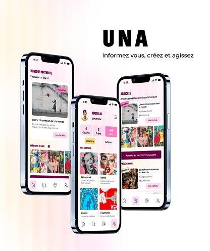
Ma recherche s’est déroulée en deux temps. J’ai d’abord dressé un état des lieux des façons de s’informer aujourd’hui : médias traditionnels (télévision, presse), réseaux sociaux, médias indépendants, influenceurs d’actualité sur YouTube et ailleurs. Ce panorama montre à quel point l’information arrive de partout, sous des formes très variées. J’ai ensuite choisi de recentrer mon travail sur l’expérience de celui qui la reçoit, plutôt que sur mes propres convictions, et j’ai mené quelques entretiens exploratoires avec des étudiants, sur leurs habitudes médiatiques, leurs ressentis, leurs réactions et leurs attentes.
Trois enseignements en sont ressortis :
En parallèle, je me suis penchée sur l’art, un domaine qui me passionne, comme moyen de transmettre un message et de sensibiliser autrement. Cette piste rejoint ce que disent les entretiens : la psychologie suggère que créer, dessiner ou peindre aide à transformer ce que l’on ressent en quelque chose de concret. L’art devient ainsi un double levier : il porte l’information, et il aide à la digérer.
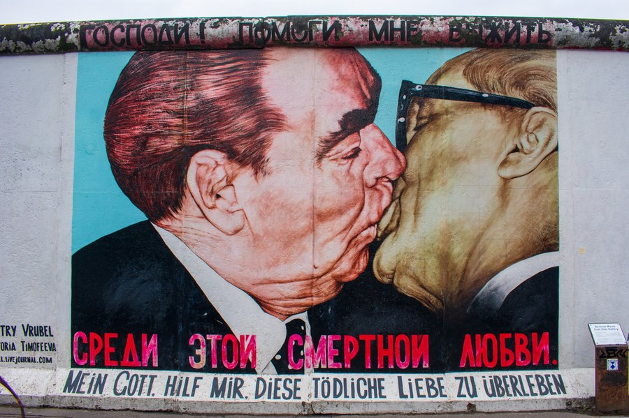
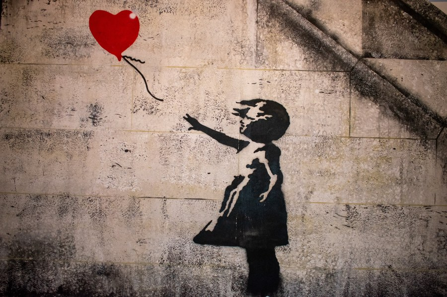
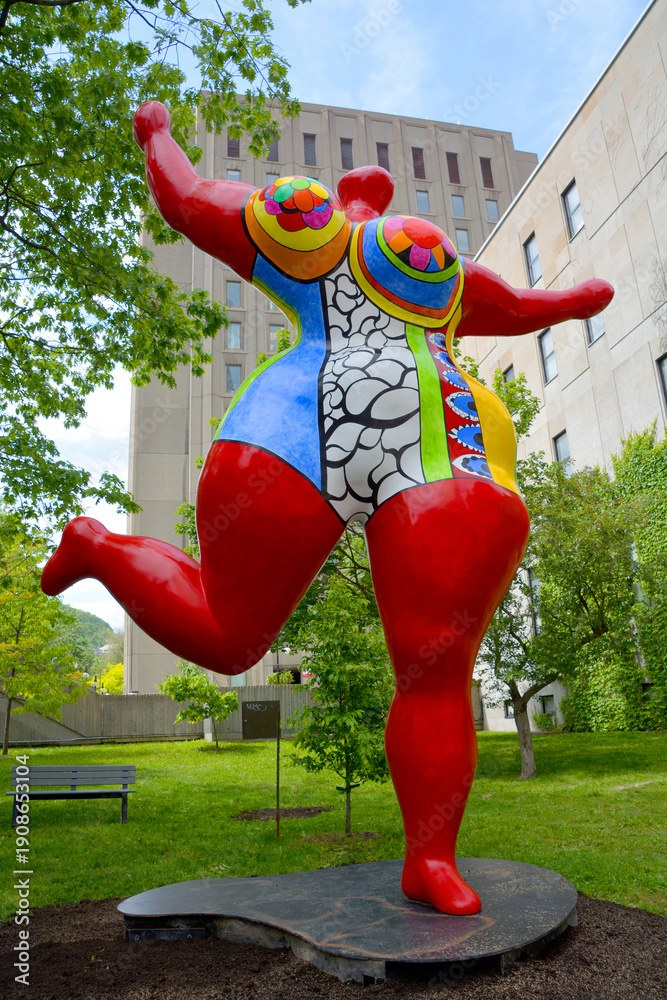
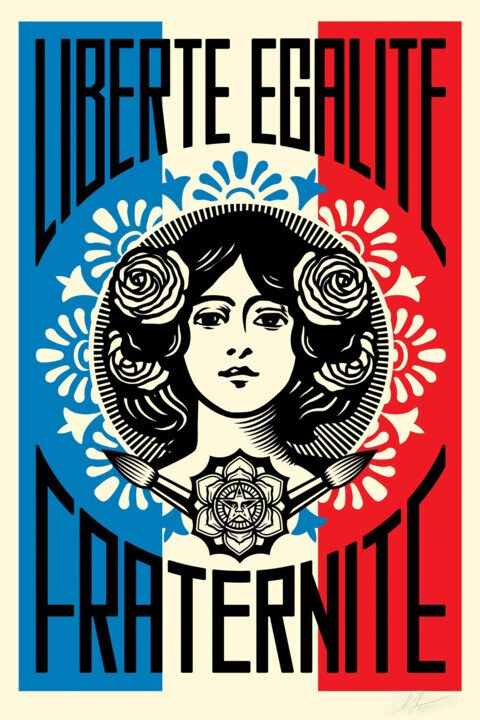
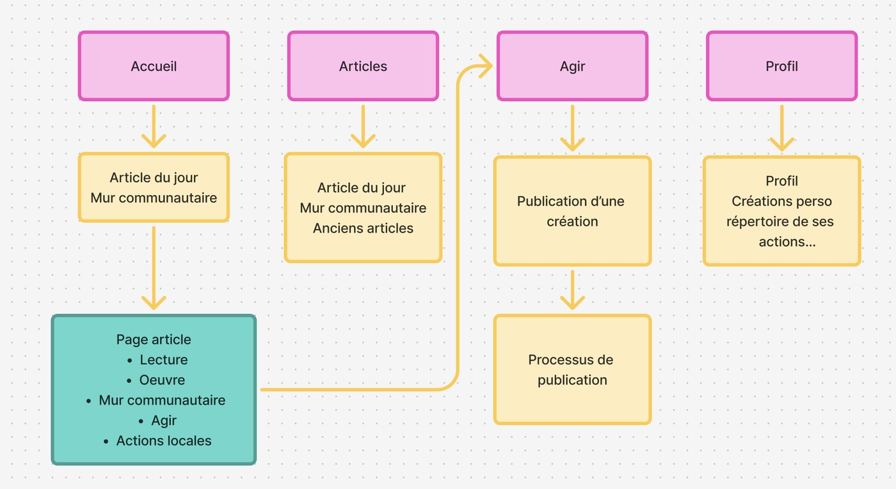
Arborescence UNA
À partir de ces enseignements, j’ai défini UNA autour de trois temps, chacun répondant à un problème identifié pendant la recherche.
S’informer : un seul sujet par jour, pour ne pas se noyer. Chaque jour, UNA propose un article court, écrit par un.e journaliste indépendant.e invité.e à traiter le sujet de son choix, de préférence en lien avec l’actualité. Ce rendez-vous unique est facile à intégrer au quotidien, sans surcharge. Le/la journaliste change chaque jour, ce qui apporte une pluralité de regards et de sujets. Il ou elle choisit aussi une œuvre d’art liée au thème : elle permet de ressentir le sujet avant de le traiter, et accompagne la lecture.
Créer : une pause pour exprimer ce que l’on ressent. Si l’utilisateur le souhaite, une pause création l’invite à réagir par sa propre création, sur le sujet du jour ou un autre. Cette création se fait en dehors de l’application : l’utilisateur importe son œuvre, puis peut la partager sur le mur communautaire et découvrir celles des autres. Créer, c’est s’arrêter sur un sujet et y mettre son regard et son ressenti. Partager, c’est sensibiliser les autres et créer un élan de solidarité autour du sujet.
Agir : dépasser l’impuissance, sans obligation. Juste après l’article et la création, quand l’utilisateur est le plus réceptif, UNA propose des passerelles concrètes vers le monde réel : pétitions, associations, dons. Elles restent optionnelles, car s’informer, c’est déjà agir.
Pour UNA, je voulais une identité éditoriale et artistique, qui n’ajoute pas d’anxiété à une actualité déjà lourde. Elle repose sur deux références : l’univers éditorial de la presse, pour la hiérarchie de lecture et la crédibilité de l’information, et le collage, technique artistique que l’on retrouve dans les œuvres de l’application.
La palette est douce : le rose pâle (#FFDAED) domine, en fond et dans les cartes, accompagné d’un bordeaux (#6E0044) pour les titres et les actions principales, qui assure un contraste net. Un jaune (#FFD875) et un vert sauge (#E3E3C2) servent d’accents, et un rose plus vif signale les repères du jour. Le fond joue sur un dégradé rose et jaune translucide, pour un effet lumineux et apaisant.
Côté typographie, Ringold, grasse et au style de titraille de presse, porte les titres, et Montserrat, déclinée en plusieurs graisses, assure des textes lisibles sur petit écran. L’interface reste volontairement calme, avec des cartes arrondies et des espaces aérés, pour que les œuvres, plus colorées et expressives, portent l’émotion. Certaines étiquettes inclinées reprennent l’esprit du collage dans l’interface.
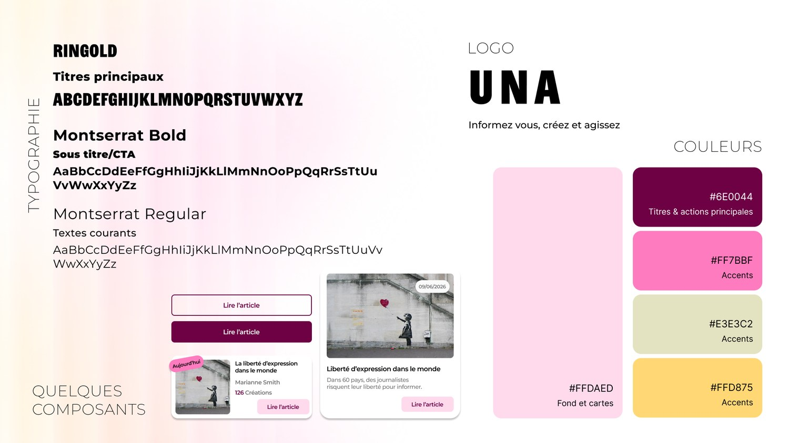
Avant d’appliquer la direction artistique, j’ai posé la structure des écrans principaux sous forme de wireframes : l’accueil, le répertoire des articles précédents, le mur communautaire, la phase de création et de partage, le profil et la partie « agir ».
J’y ai travaillé la hiérarchie de l’information. L’article du jour se distingue des précédents par sa taille et son poids visuel, une différence que la direction artistique renforce ensuite par la couleur (étiquette rose « Aujourd’hui », étiquettes sauge pour les dates). En fin de lecture, les actions proposées sont présentées comme des options, jamais comme des obligations, pour ne pas culpabiliser l’utilisateur.
Ce travail m’a aussi permis de visualiser l’arborescence complète de l’application et la façon dont les écrans s’enchaînent, avant de me concentrer sur l’habillage visuel.
À partir de ces enseignements, j’ai défini UNA autour de trois temps, chacun répondant à un problème identifié pendant la recherche.
S’informer : un seul sujet par jour, pour ne pas se noyer. Chaque jour, UNA propose un article court, écrit par un.e journaliste indépendant.e invité.e à traiter le sujet de son choix. Ce rendez-vous unique est facile à intégrer au quotidien, sans surcharge, et l’œuvre d’art choisie permet de ressentir le sujet avant de le traiter.
Créer : une pause pour exprimer ce que l’on ressent. L’utilisateur importe son œuvre, puis peut la partager sur le mur communautaire et découvrir celles des autres. Partager, c’est sensibiliser les autres et créer un élan de solidarité autour du sujet.
Agir : dépasser l’impuissance, sans obligation. Juste après l’article et la création, UNA propose des passerelles concrètes vers le monde réel : pétitions, associations, dons. Elles restent optionnelles, car s’informer, c’est déjà agir.
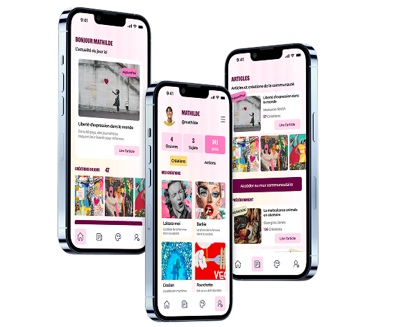
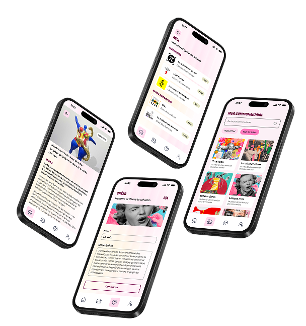
UNA m’a appris à mener seule un projet sur toute une année. Je me suis lancée tardivement, mais c’est dans les trois derniers mois, quand je m’y suis vraiment plongée, que j’ai le plus avancé et le plus pris de plaisir. J’en retiens une vraie capacité d’autonomie et de discipline, et aussi qu’un projet long gagne à être découpé en jalons dès le départ.
Côté design, trouver une direction artistique harmonieuse m’a demandé beaucoup d’itérations : faire cohabiter des couleurs, des typographies et des œuvres très expressives sans que l’interface les écrase.
Je n’ai pas eu le temps de réaliser des tests utilisateurs sur les écrans finaux. J’ai en revanche présenté brièvement le concept lors de mes deux entretiens, et les retours ont été encourageants : la lecture de l’article a été imaginée comme une pause de cinq à dix minutes, et la pause création plutôt plus tard dans la journée, le soir en rentrant, pour se poser et réfléchir. Ces retours, informels et issus de deux personnes seulement, ne remplacent pas un vrai test.
La prochaine étape serait de faire tester le prototype Figma, entièrement cliquable, pour vérifier que le parcours « lire, créer, agir » est compris, et à quel moment de la journée chaque étape trouve sa place. Au-delà de l’exercice, c’est un projet qui m’a tenu à cœur : le sujet m’a passionnée et m’a donné envie de m’investir pleinement dans la direction artistique.
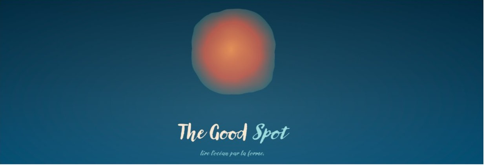
Cadre du projet : projet long de trois mois, réalisé en binôme, pour un client professionnel.
Le client souhaitait donner vie à une web-app destinée aux amateurs de sports aquatiques, qu’ils soient novices ou confirmés. Il disposait déjà d’un site, mais n’en était pas pleinement convaincu et attendait de nouvelles propositions de valeur auxquelles il n’avait pas pensé.
Pour un pratiquant de sports nautiques, partir à l’eau suppose de lire des conditions changeantes (vent, houle, marées, courants) et d’en tirer une décision : où aller, à quel moment, avec quel matériel. Ces informations sont difficiles à interpréter, surtout pour un novice, alors qu’elles conditionnent à la fois le plaisir de la sortie et la sécurité.
Le brief nous laissait une grande liberté sur le point de vue adopté, les utilisateurs ciblés et les solutions à apporter. C’est ce qui nous a convaincus dès le départ, et ce qui nous a permis de définir notre angle : s’adresser à tous les pratiquants, du novice au confirmé, autour de ce même besoin.
Face à ce constat, la question à laquelle répond ce projet est la suivante : comment faciliter la compréhension et l’anticipation des conditions maritimes pour les pratiquants de sports nautiques ?
Le projet s’adresse aux pratiquants de sports nautiques, novices comme confirmés, et vise à les aider à organiser leur prochaine sortie. Il poursuit quatre objectifs :
Ma recherche s’est faite en deux temps : des entretiens pour comprendre la demande et les besoins, puis des veilles pour nourrir et challenger nos pistes de concept.
Entretiens de plusieurs personnes intéressées par une application comme The Good Spot. Trois enseignements en sont ressortis :
Nos trois veilles d’inspiration qui ont orienté nos choix :
Suggestion de spots, de matériel, de conseils en général.
Data humanism — des visualisations narratives, organiques et sensibles.
Le feedback post-session — rituel de progression, mémoire vivante.
À partir de ces enseignements, nous avons défini notre concept autour de trois piliers, chacun répondant à un besoin identifié pendant la recherche.
Trouver un spot. Les novices ont besoin d’être guidés, les confirmés de renouveler leurs sorties : l’app propose des spots autour de l’utilisateur, en fonction de la météo, de son niveau et de son sport. Les conditions sont rendues lisibles par une visualisation de données organique.
Progresser. Après chaque session, l’utilisateur enregistre ses sensations, à l’image de ce que propose Strava : ces feedbacks permettent de suivre son niveau. Un coach IA « invisible », c’est-à-dire sans question-réponses directes mais qui suggère des recommandations et des conseils.
Partager. On pratique souvent seul, mais on n’est jamais seul sur l’eau : chaque spot a sa communauté (avis, etc.), et l’on peut rejoindre un groupe via WhatsApp, un outil déjà très présent et utilisé par les communautés de sports nautiques.
Un choix important concerne la connexion. Une web-app n’impose pas forcément la création d’un compte, et tout le monde n’y est pas favorable : nous avons donc prévu deux parcours. Sans compte, le coach IA reste présent de façon générale, avec des recommandations de base pour trouver un spot et les règles de sécurité. Avec un compte, l’accompagnement devient personnalisé.
Le concept tient en une promesse : « L’app qui t’amène au bon spot, au bon moment, quel que soit ton niveau ». Le bon spot et le bon moment répondent à l’anticipation des conditions, et « quel que soit ton niveau » à une compréhension adaptée à chacun.
Pour la direction artistique, nous voulions une interface qui évoque l’océan et qui donne envie de comprendre des données souvent austères, avec une touche poétique. Notre référence est la data-visualisation artistique (Giorgia Lupi, data humanism) : des formes vivantes plutôt que des graphiques froids, avec une signature aquarelle.
La palette repose sur trois couleurs : un bleu-vert (#2C8A8F) qui évoque l’eau, un orange (#E76F51), presque son complémentaire, qui apporte contraste et énergie, et une crème (#F5E9D4) qui adoucit l’ensemble.
Côté typographie, Lullabies, manuscrite et évoquant l’aquarelle, est réservée aux titres pour garder une lecture confortable. Clother, moderne et très lisible, porte les textes et les boutons et contraste avec l’expressivité des titres.
L’ensemble reste très rond, avec des formes organiques qui prolongent l’esprit de la dataviz, présente aussi bien dans les écrans météo que dans les graphiques de progression.
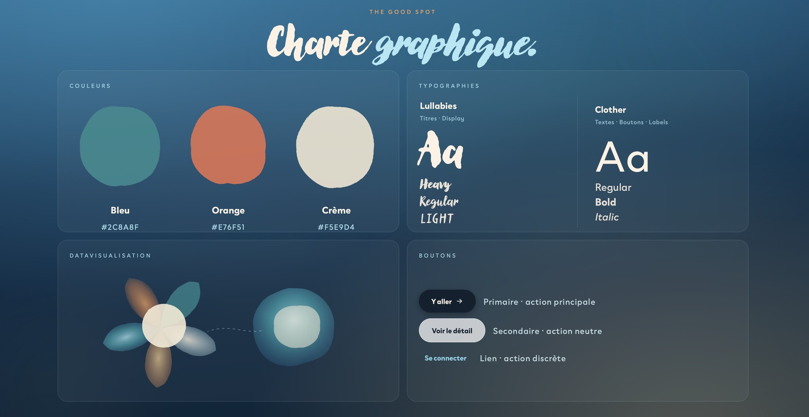
Avant de passer aux écrans finaux, nous avons poussé les wireframes le plus loin possible : la structure, les contenus et la hiérarchie étaient arrêtés avant d’ajouter la direction artistique.
Cette précision avait une raison pratique : nous avons ensuite utilisé l’IA pour réaliser la data-visualisation, appliquer la direction artistique et générer la web-app. Les wireframes lui servaient de cahier des charges. La recherche, la structure, les parcours et les choix graphiques étaient les nôtres, et l’IA a produit les écrans à partir de nos wireframes et de nos prompts.
L’interface s’organise en quatre pages :
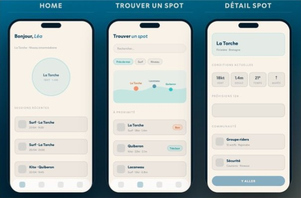
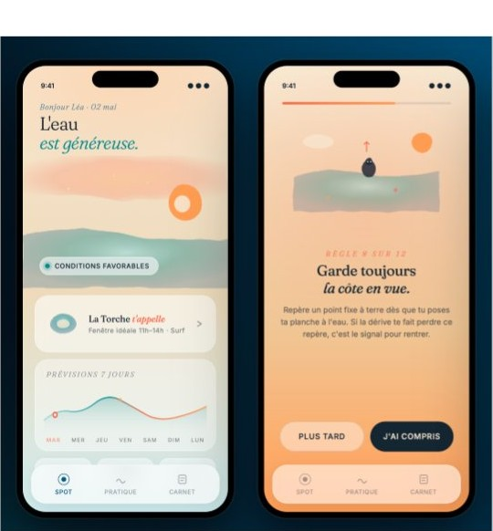
Une fois les wireframes validés, nous avons réalisé les écrans finaux, en nous concentrant sur leur qualité graphique. L’IA a produit la data-visualisation, très présente dans l’interface (écrans météo, graphiques de progression), puis la web-app elle-même.
Le résultat est une web-app fonctionnelle, disponible sur desktop et sur mobile, avec les deux parcours (avec ou sans compte). Nous l’avons démontré de bout en bout lors de la présentation :
Ce projet m’a appris à travailler avec l’IA de façon concrète, et m’a fait mesurer ce que peut devenir le métier d’UX-UI designer : un métier où la réflexion, la direction et les choix comptent autant que l’exécution. Le rendu, très abouti pour un projet de deux étudiantes, montre aussi qu’on peut aller plus loin.
En voyant les productions de l’IA, j’ai douté de ma légitimité : j’avais l’impression que ce n’était pas vraiment mon travail. Avec le recul, rien n’aurait existé sans nos recherches, nos wireframes, nos prompts et nos choix graphiques, et nos professeurs se sont dits très satisfaits du résultat.
Nous avons en revanche moins exploité la partie technique « classique », construire les écrans et l’app à la main.
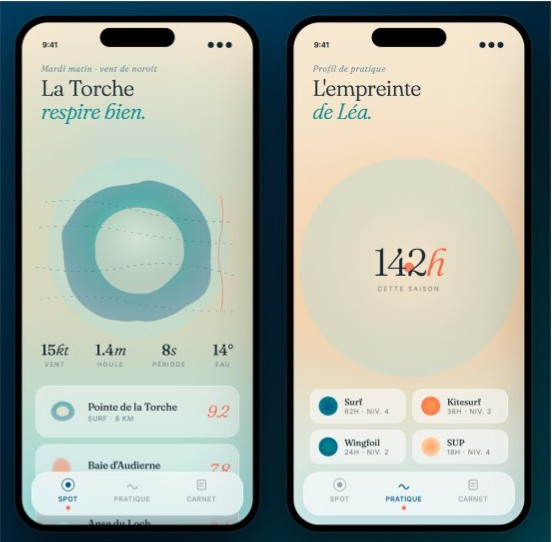
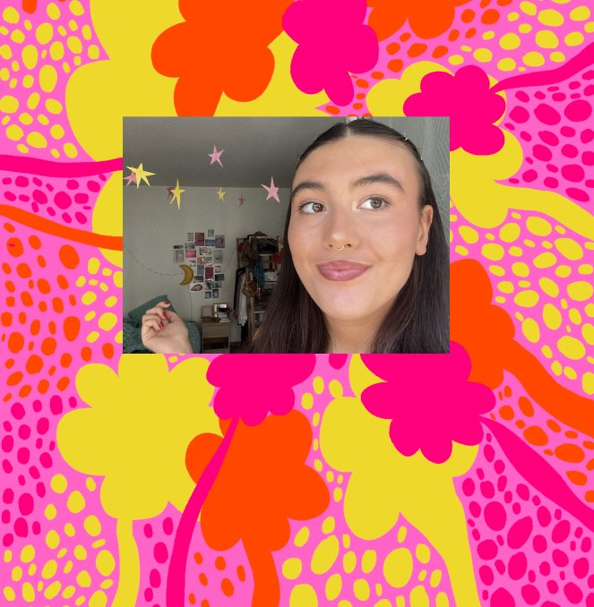
Je m’appelle Mathilde, j’ai 22 ans et je suis étudiante à l’École de design Nantes Atlantique, actuellement en année de césure. Mes trois premières années à l’école m’ont permis de me spécialiser en UX-UI design, développer ma créativité autour de problématiques concrètes qui touchent directement les utilisateurs.
Je rentre l’année prochaine en Master 1 spécialisé en Food alliant innovation, production et valorisation de l’alimentation, un univers qui me passionne.
Je suis à la recherche d’une alternance de deux ans sur Nantes ou sur Paris à partir de septembre 2027. Mon rythme d’alternance est de 6 semaines en entreprise et 3 semaines à l’école.
Projets personnels
Troisième année spécialisée en UX-UI.
Conception de maquettes UX UI, Wireframes, prototypes, tests utilisateurs, Branding
BUT Gestion des Entreprises et des Administrations
Bac général spécialités Sciences Économiques et Sociales & Histoire Géo Géopolitiques, Option Arts Plastiques, Management

Café dobree
Apprentissage du fonctionnement entrepreneurial. Conception d’un site de A à Z dédié aux étudiants dans leurs recherches de master en France et à l’international.
Grandes et petites vacances. Préparation d’activités manuelles, sportives et culturelles. Travail d’équipe (animateurs). Vie quotidienne avec les enfants de 2 à 12 ans.
Stage de découverte des métiers en Ressources Humaines, contrôle de gestion et de la comptabilité. Réalisation d’un guide d’insertion pour les nouveaux collaborateurs RH au sein de l’équipe et du Groupe.
Distribution alimentaire pour les étudiants le vendredi soir
Art (peinture, dessin, créations...)
Cuisine
Course à pieds
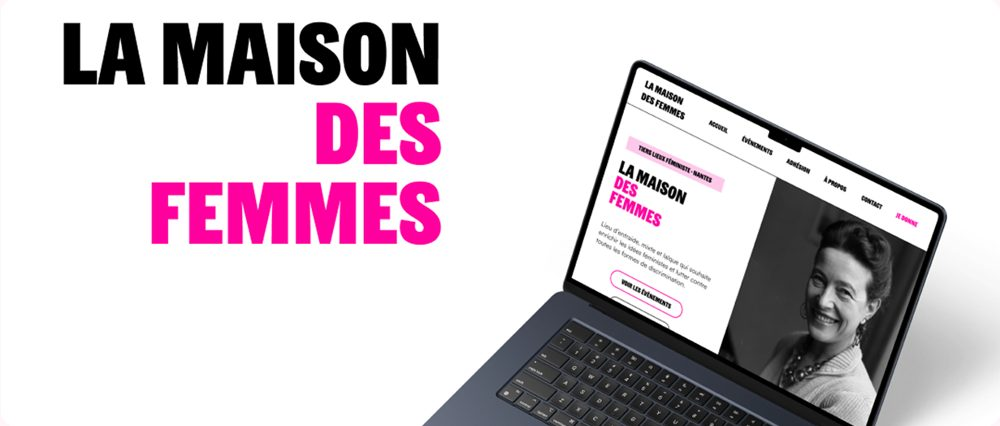
La Maison des Femmes est une association qui accueille et accompagne les femmes et les enfants victimes de violences. Ces structures existent dans plusieurs villes de France, mais restent souvent peu visibles et manquent de moyens humains et financiers pour se faire connaître.
C’est en découvrant le film « La Maison des Femmes », sorti en mars 2025, que l’idée de m’intéresser à celle de Nantes m’est venue. En consultant son site actuel, j’ai rapidement identifié un manque de visibilité sur la structure et son fonctionnement.
Ce projet est un projet étudiant, sans lien direct avec l’association.
L’objectif principal a été de rendre plus visibles et accessibles les actions de la Maison des Femmes de Nantes, à travers une refonte pensée pour trois publics : les femmes victimes de violences, qui ont besoin d’être écoutées, informées et orientées ; les personnes curieuses de ses activités créatives ; les personnes souhaitant s’engager, financièrement ou humainement.
Trois parcours prioritaires : s’informer sur les actions et les moyens de contact ; découvrir et accéder aux événements créatifs ; comprendre l’histoire et les valeurs de l’association.
Pour commencer, j’ai exploré trois parcours différents afin d’identifier les points d’amélioration, en analysant l’existant et en cherchant de nouveaux itinéraires pour accéder à l’information.
Mes observations ont porté sur la navigation, que j’ai souhaité revoir, ainsi que sur la Direction Artistique, peu engageante et peu lisible à certains endroits.
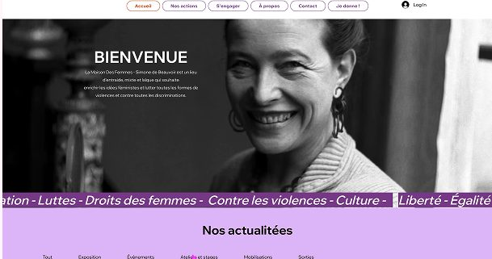
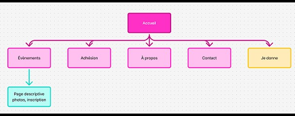
Après ce travail de recherche et de réflexion, j’ai réorganisé l’arborescence du site pour que chaque rubrique corresponde à un parcours : « Comprendre l’histoire et les valeurs » correspond à l’onglet « À propos », « Découvrir les événements » à l’onglet « Événements ».
Le parcours « Engager » se traduit par l’onglet « Adhésion », et un onglet « Je donne » a été ajouté pour faciliter la prise de contact direct. Un onglet « Contact » complète l’ensemble.
Concernant la direction artistique, il y avait une volonté de dynamisme avec des couleurs (violet, rose) et des interactions, mais l’ensemble restait daté et l’information peinait à se hiérarchiser.
J’ai construit ma charte graphique en croisant des références : une esthétique éditoriale, de grands titres en gras, un clin d’œil au vocabulaire visuel des mouvements féministes. Le rose vif donne une touche militante, en contraste fort avec le noir et le blanc, pour donner de l’impact aux messages clés.
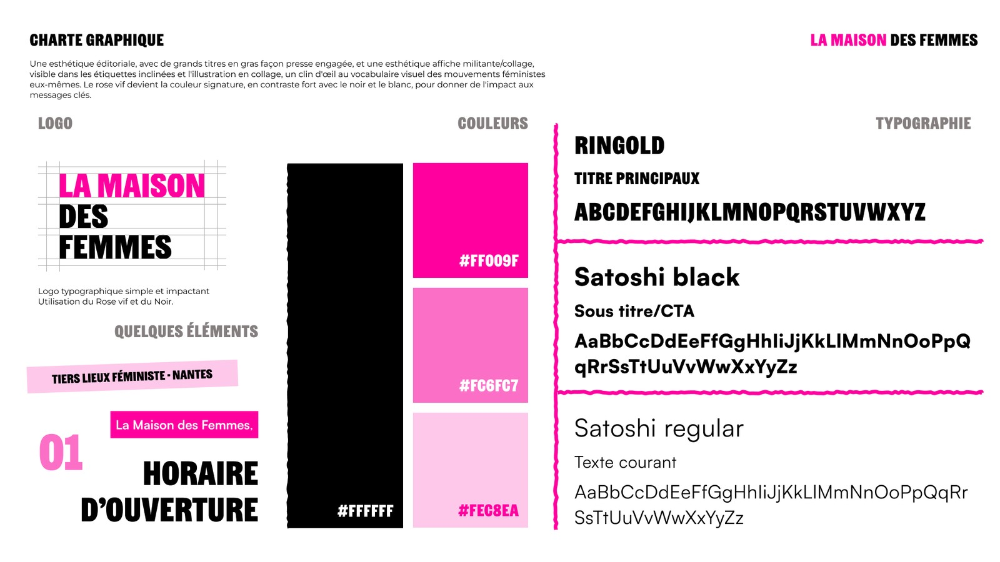
Avant d’appliquer la direction artistique, j’ai posé la structure de chaque page sous forme de wireframes, pour valider la hiérarchie de l’information et les parcours de lecture indépendamment du choix visuel.
La page d’accueil priorise un accès rapide aux deux actions clés (voir les événements, rejoindre l’association). Sur la page Événements, une liste verticale de cartes identiques permet de lire chaque événement. Sur la page Adhésion, la structure met en avant le bloc d’accroche et l’argumentaire.
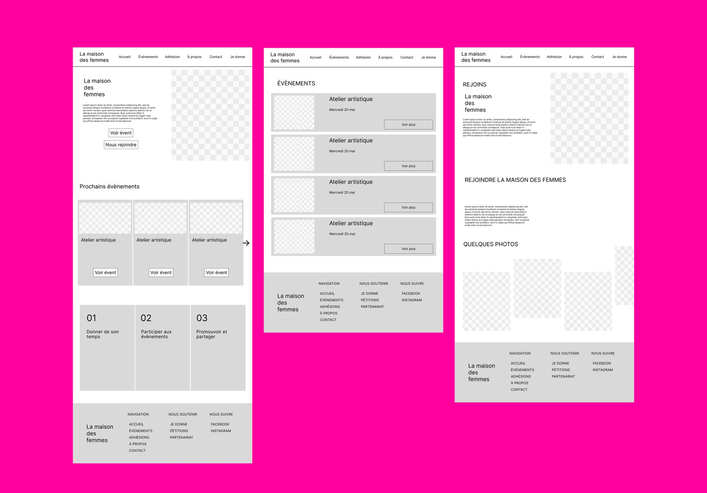
Les wireframes terminés, je me suis mise à la création des écrans finaux en appliquant la DA souhaitée et en testant que les textes et les messages à transmettre restent crédibles et plus accessibles au site.
J’ai également rajouté une bannière à la fin de chaque page appelant à la signature de la fermeture ainsi qu’au don. Un point que j’avais ajouté pour s’assurer qu’il rappelle les valeurs de la structure.
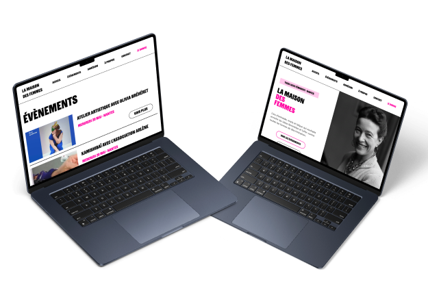
Ce projet m’a appris à concilier identité militante et modernité visuelle, sans tomber ni dans la fadeur institutionnelle, ni dans une esthétique trop agressive pour le sujet. Travailler sur une structure à vocation sociale m’a aussi confrontée à des choix de DA que je ne ferais pas dans un projet purement commercial.
Au-delà de l’exercice, c’est un projet qui m’a tenu à cœur : les valeurs de l’association et la place qu’elle donne à l’art m’ont donné envie de m’investir pleinement dans la direction artistique.
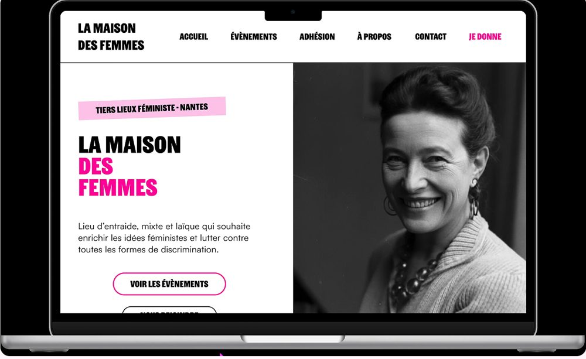